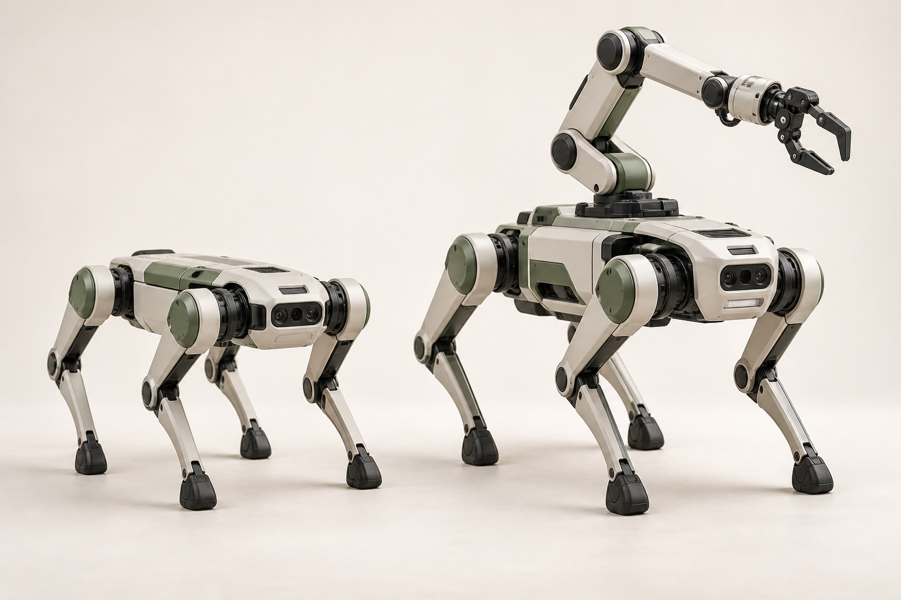

Loading the review…
EXPLORING QUADRUPED LOCOMOTION & MANIPULATION
Beyond locomotion.
Towards interaction.
Control, learning, and systems for quadrupeds—with and without arms.
Follow the questions. Trace the evidence.

LOCOMOTION + MANIPULATION · AI-GENERATED CONCEPTFOLLOW THE QUESTIONS
Explore the research, one question at a time.
From methods to the machines that use them.
Explore work by robot platform and manipulator. Hardware labels follow recorded source evidence; an unspecified model stays “Not recorded.” Quadruped locomotion and quadruped-arm studies have separate filters, alongside adjacent embodiments and background methods.
Explore quadruped locomotion → Explore quadruped-arm studies →THE READING ROOM
The literature / Library
Search papers, authors, or keywords. Open a paper to see its abstract and how it is discussed in the review.
READ THE SYNTHESIS
The synthesis / Review
The full review · Select a blue citation to inspect its source
The library could not be loaded. Please refresh. To preview offline, serve this folder with a local HTTP server.